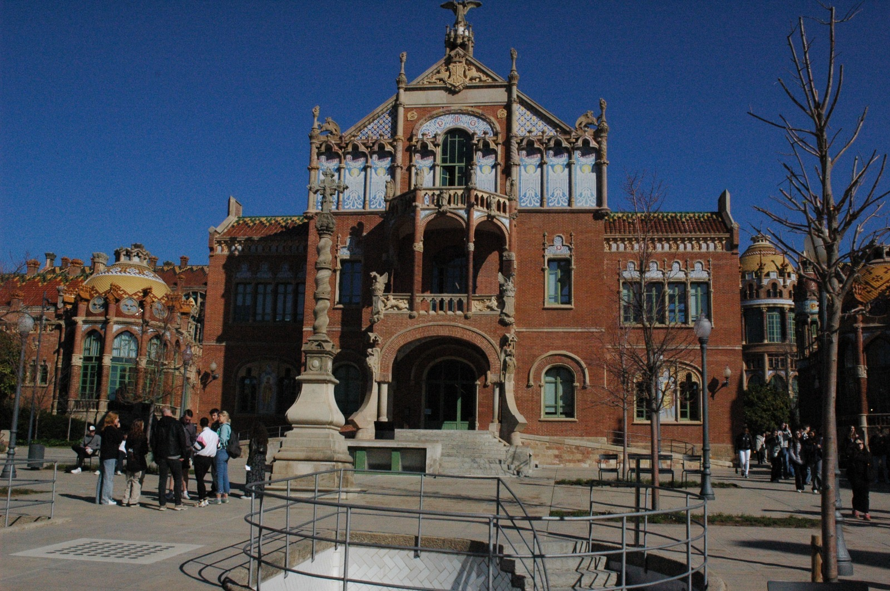

Hospital St Pau
Description :
L'Hôpital de Sant Pau, ou Hospital de la Santa Creu i Sant Pau, est l'un des monuments les plus
remarquables de Barcelone, en Espagne. Il a été conçu par l'architecte catalan Lluís Domènech i Montaner et
construit entre 1902 et 1930.
Cet hôpital est un exemple exceptionnel de l'architecture moderniste catalane. Il est célèbre pour sa
beauté architecturale, sa richesse décorative et son intégration harmonieuse avec son environnement. L'Hôpital de
Sant Pau est un complexe impressionnant composé de plusieurs pavillons reliés par des jardins et des passages,
créant ainsi un espace hospitalier unique et agréable.
Chaque pavillon de l'hôpital est orné de détails exquis, tels que des sculptures, des céramiques, des
vitraux et des mosaïques, qui témoignent du talent artistique des artisans de l'époque. Les motifs floraux et les
formes organiques abondent, créant une atmosphère paisible et accueillante pour les patients et le personnel.
En plus de sa valeur architecturale et artistique, l'Hôpital de Sant Pau a une histoire riche et
fascinante. Il a été fondé au XVe siècle comme un hospice pour les personnes démunies, et au fil des siècles, il
est devenu l'un des principaux centres de soins de Barcelone.
Aujourd'hui, l'Hôpital de Sant Pau est classé au patrimoine mondial de l'UNESCO et continue de
fonctionner en tant qu'hôpital, bien que la plupart de ses installations médicales aient été transférées dans des
bâtiments modernes adjacents. Il est également ouvert au public pour des visites guidées, permettant aux visiteurs
d'admirer son architecture spectaculaire et de découvrir son histoire fascinante.
......
L'hôpital Saint Pau est un hôpital qui est très agréable à voir et qui a une histoire passionnante. Malgré le fait qu'il n'ait pas été fini à cause d'un manque de budget, il est très grand et novateur pour son époque. Cet hôpital est dans les couleurs rouge, ce qui représente bien l'esprit de la Catalogne. De plus, j'ai aussi appris sur l'histoire de la médecine.
